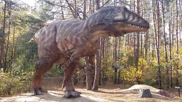
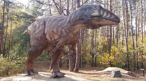

Giganotozaur, znany również jako Giganotosaurus, był jednym z największych i najpotężniejszych drapieżników, którzy kiedykolwiek żyli na Ziemi. Żył około 98-97 milionów lat temu, w okresie późnej kredy, na terenach dzisiejszej Ameryki Południowej. Jego imponujące rozmiary czynią go jednym z największych teropodów, osiągając długość około 12-13 metrów i ważąc do 8 ton. Nazwa Giganotozaur oznacza "gigantyczny jaszczur", co doskonale oddaje jego potężną budowę.
 Charakterystyczne cechy Giganotozaura obejmują długą, smukłą czaszkę wyposażoną w duże, stożkowate zęby, które były doskonałym narzędziem do siekania i kruszenia mięsa. Jego długie kończyny sprawiały, że był szybkim i zwinny, co pozwalało mu na skuteczne polowanie na inne dinozaury, w tym na ogromne roślinożerne gatunki, takie jak Argentynozaur.

Odkrycie skamieniałości Giganotozaura w Argentynie w latach 90. XX wieku wzbudziło ogromne zainteresowanie wśród paleontologów i przyczyniło się do lepszego zrozumienia prehistorycznej fauny Ameryki Południowej. Jego pozycja jako jednego z największych drapieżników, które kiedykolwiek żyły, sprawia, że jest fascynującym obiektem badań naukowych, a także inspiracją dla wielu entuzjastów dinozaurów.
Charakterystyczne cechy Giganotozaura obejmują długą, smukłą czaszkę wyposażoną w duże, stożkowate zęby, które były doskonałym narzędziem do siekania i kruszenia mięsa. Jego długie kończyny sprawiały, że był szybkim i zwinny, co pozwalało mu na skuteczne polowanie na inne dinozaury, w tym na ogromne roślinożerne gatunki, takie jak Argentynozaur.

Odkrycie skamieniałości Giganotozaura w Argentynie w latach 90. XX wieku wzbudziło ogromne zainteresowanie wśród paleontologów i przyczyniło się do lepszego zrozumienia prehistorycznej fauny Ameryki Południowej. Jego pozycja jako jednego z największych drapieżników, które kiedykolwiek żyły, sprawia, że jest fascynującym obiektem badań naukowych, a także inspiracją dla wielu entuzjastów dinozaurów.

Adres: Zwoleń Radosna 26-700
Kontakt: nr. 797 715 111
email: jurrasicpark@gmail.com
Godziny otwarcia